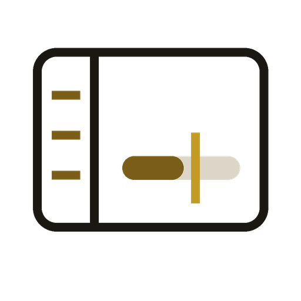
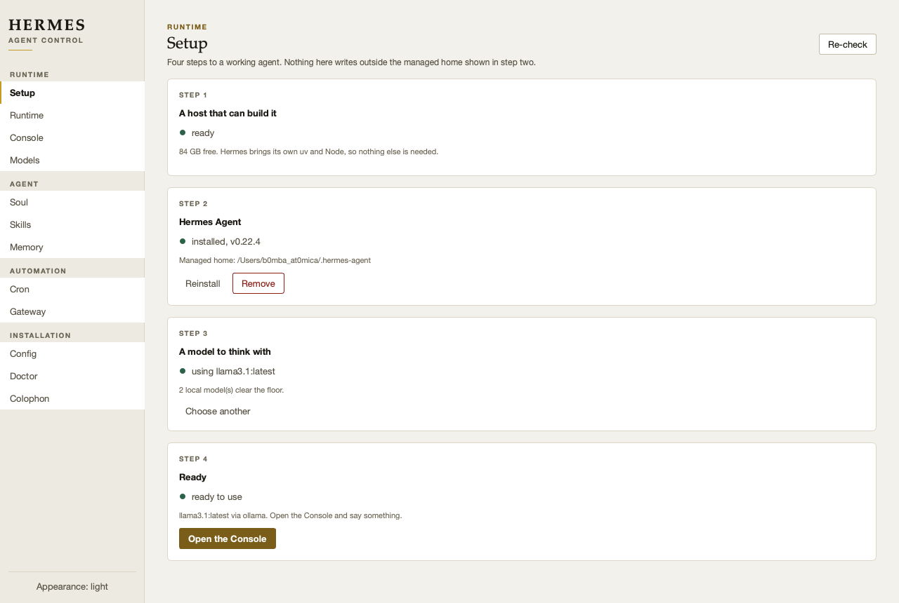
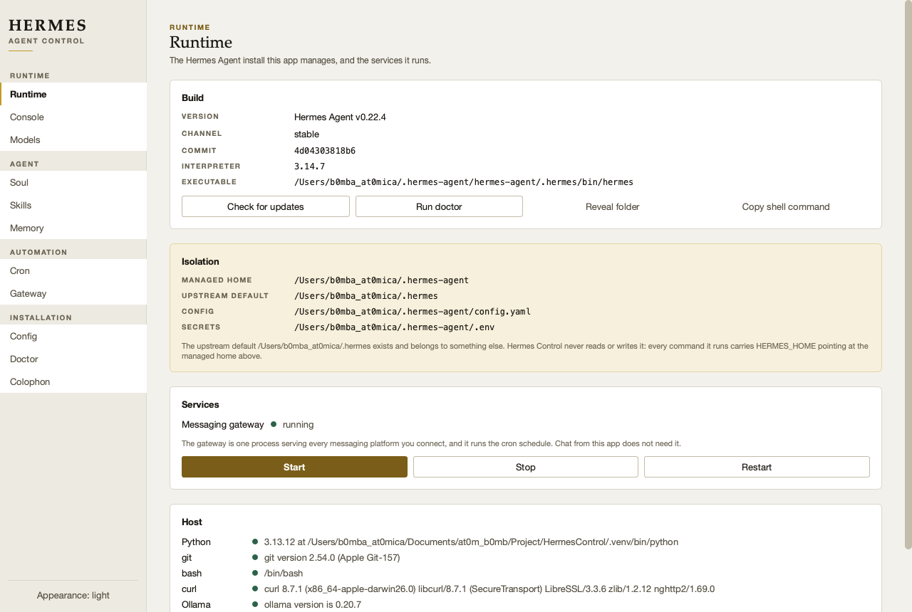
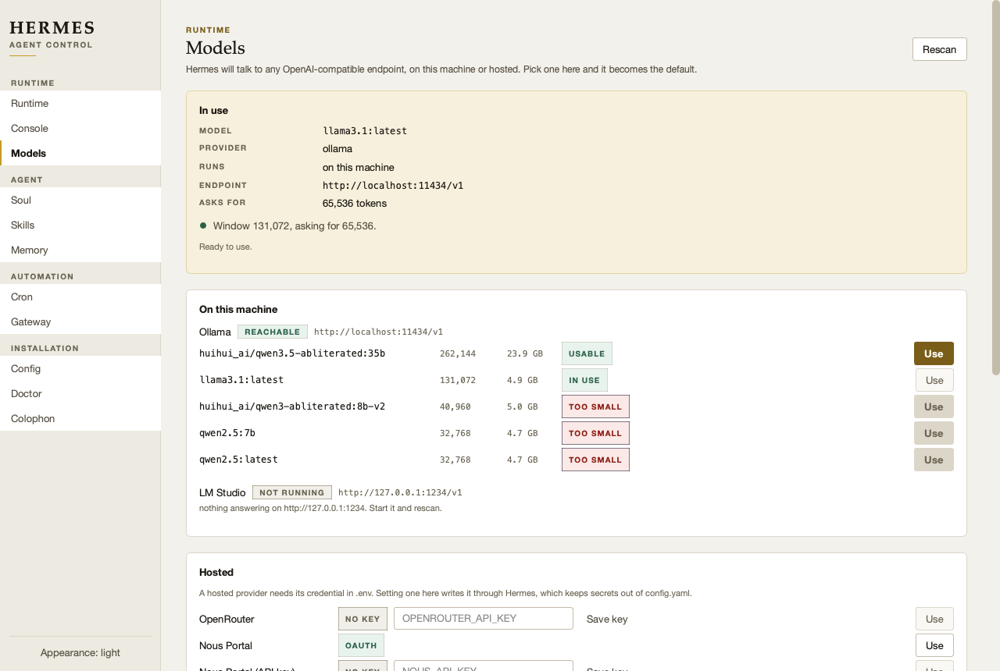
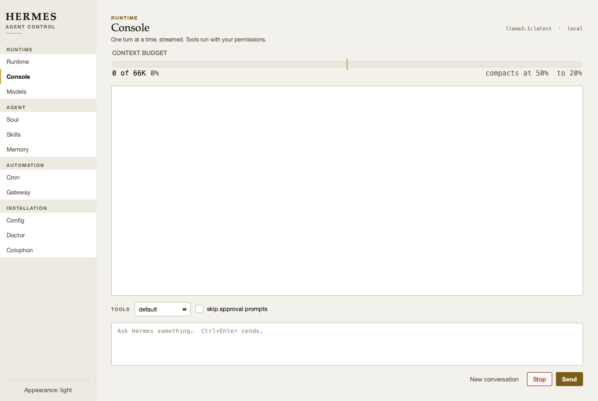
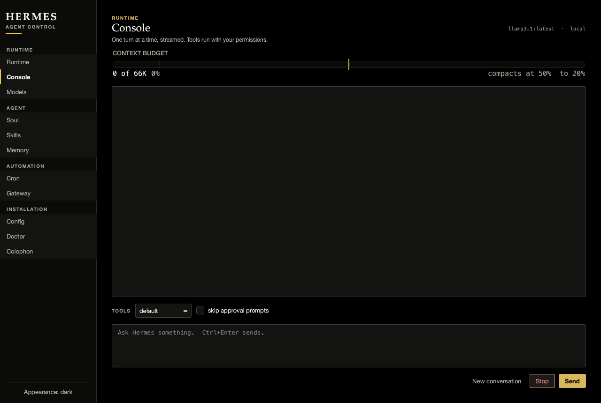
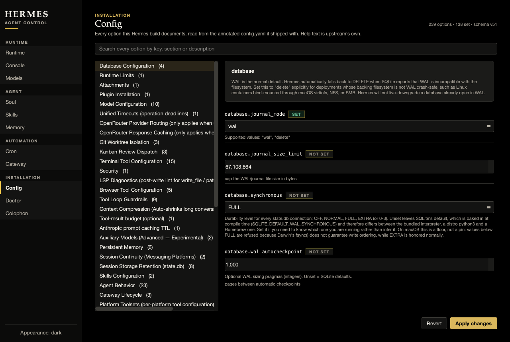

Hermes Control Agent controlA desktop control panel for Nous Research's Hermes Agent. It installs the agent without disturbing anything else on the machine, keeps it running, and gives you every option it ships with — on Windows, macOS and Linux, from one codebase.
Setup checks the host, installs Hermes Agent, finds you a model, and tells you when you are done.
The install runs Nous's own installer and streams its output into the panel rather than hiding it behind a spinner — a three-gigabyte install that prints nothing for four minutes looks broken, and the output is the only way to see which stage failed when one does. It installs to a managed home and never to the upstream default, so a Hermes that already exists on the machine is untouched.

Most obvious choices don't qualify — the 64,000-token floor rules out qwen2.5, phi4, mistral:7b and plenty more. So the library is short and chosen for exactly one reason: every entry clears the floor. Downloads stream real progress from Ollama, and you can pull anything the registry accepts by name, including a Hugging Face GGUF via hf.co/user/repo:Q4_K_M.
Published gets it downloaded; measured decides if it works. After every download the app re-reads the real context window from the model itself and says so if it fell short. A wrong published figure is precisely the trap this exists to prevent.
Ollama publishes no search or library API — /api/library and /api/search both 404 — so this is a curated list plus a name field, not a browsable catalogue. Pretending otherwise would mean screen-scraping something that would rot.
Hermes already ships a terminal UI, a web dashboard and an Electron app. Three things they leave on the table.
Hermes keeps everything under HERMES_HOME, defaulting to ~/.hermes. If anything already owns that path, the stock one-liner lands on top of it. This installs to a sibling and passes HERMES_HOME explicitly on every command.
The editor contains no list of settings. It derives its schema from the annotated config.yaml your install shipped with — 239 options across 42 sections — so it describes your version, including options added later.
Hermes refuses any context window under 64,000 tokens. Ollama serves 32,768. Left alone that is a turn that dies a minute in. Here it is a verdict beside the model, before you pick it.

This is the finding that justified the app. Hermes enforces a minimum context window in agent_init and refuses to start below it. Ollama's default is half of that, and several widely used local models were never trained past 40K — so the failure arrives late, as a stack trace in a log, long after you chose the model.
And a second one that is easier to miss. Hermes sends a tool list on every request, so a model without tool-calling support is refused with HTTP 400 before producing a single token — however large its window is. deepseek-r1 is the common case: a 131,072-token window, chats perfectly well, cannot be an agent. Ollama reports this as a capability, so the app now checks it and says which requirement failed.
Measured on the build machine, straight out of Ollama's /api/show:
| Model | Real window | Size | Verdict | One trivial turn |
|---|---|---|---|---|
| qwen3.5-abliterated:35b | 262,144 | 23.9 GB | clears | 461 s |
| llama3.1:latest | 131,072 | 4.9 GB | clears | 31 s |
| qwen3-abliterated:8b-v2 | 40,960 | 5.0 GB | refused | — |
| qwen2.5:7b | 32,768 | 4.7 GB | refused | — |
The subtle part. model.ollama_num_ctx is sent to Ollama uncapped, so setting it to 65,536 satisfies Hermes even for a model whose trained window is smaller. It appears to work while being misconfigured. The Models page reads the real window rather than trusting the setting.

The meter on the Console is the one thing here no other tool could show, because it is made of Hermes's own mechanic. Hermes does not truncate a long conversation — past compression.threshold of the window it rewrites the middle into a summary and carries on. The ribbon draws the window, the live token count, the threshold where that happens, and the target it compacts down to. You see a rewrite coming instead of discovering it afterwards.


| Setup | Four steps from nothing to a working agent: host check, install, a model, done. |
| Runtime | Version, channel, commit, interpreter. Isolation stated explicitly. Gateway start/stop/restart. Host prerequisites. |
| Console | Chat, streamed token by token, with the live context-budget ribbon. |
| Models | Local servers probed live; 22 hosted providers with the credential each needs and whether it is set. |
| Soul | SOUL.md — the agent's identity, first slot in its system prompt. |
| Skills | Installed procedures, including the ones the agent wrote for itself. |
| Memory | The two curated files injected into every session, with their character budgets. |
| Cron | Scheduled jobs, and whether the gateway is actually up to run them. |
| Connectors | The ~54 apps Hermes can act on, and the single Nous Portal sign-in they all depend on. |
| Gateway | The one process serving every messaging channel. |
| Config | All 239 options, searchable, carrying upstream's own help text. |
| Doctor | Hermes's own checks, and its logs. |
| Colophon | What it is built from, and the decisions worth stating. |

Deliberately mixed, and the choice per operation is about what stays true when Hermes changes underneath.
| Writes | Through hermes config set, which validates, migrates, and decides whether a key belongs in config.yaml or .env. Re-implementing that judgement would mean re-implementing it badly. |
| Reads | Straight off disk — config, cron jobs, skills, and the session database opened read-only. Faster than spawning a process, and it survives a reflowed table. |
| Chat | --format stream-json, the one surface Hermes documents as machine-readable. |
In the version this was built against, --json is rejected on status and cron, and hermes tools refuses to run without a terminal — which is why the mix is what it is rather than JSON everywhere.
Python 3.10+, git and curl (PowerShell on Windows). Hermes's own installer brings its own pinned uv and fetches Node itself, so the host needs none of those.
git clone https://github.com/at0m-b0mb/HermesControl.git cd HermesControl ./run.sh # Windows: .\run.ps1
First run creates the virtual environment, installs PySide6, and opens the window. If Hermes Agent is not installed yet, the Runtime page shows where it will go before anything is written.
On macOS 26, Python 3.13, PySide6 6.12 / Qt 6.12, against Hermes Agent v0.22.4:
| Isolation | Installed into ~/.hermes-agent, leaving an unrelated ~/.hermes byte-identical by SHA-256. |
| Rendering | All 12 pages render in both themes, with no exceptions raised anywhere — including inside Qt callbacks, which do not reach the caller and so used to pass unnoticed. |
| Tests | 216 pass, including a functional suite that drives the real widgets, platform-simulation tests for the Windows and Linux branches, and WCAG AA contrast checks in both themes. |
| A real turn | Ollama → llama3.1 → streamed, exit 0, 31 s. |
Not verified: Windows and Linux. Both are implemented behind a single platform module, but neither has been run on those systems.